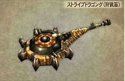
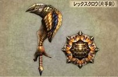
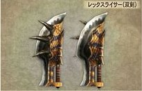
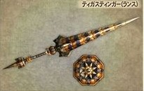

|  |  |  |
|  |  |  |  |
Short Swords
| Pros | Cons |
|---|---|
| Can block | Relatively weak |
| Can attack while blocking | Limited combo ability |
| Good elemental damage | Bad reach |
| Can roll with it drawn | Relatively weak guard |
| Can run with it drawn | expensive |
| Fast-attacking | require lots of materials |
Those are the pros and cons for the sword and shield.There the first weapons that you'll use.